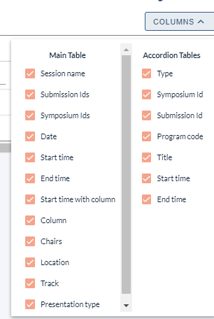
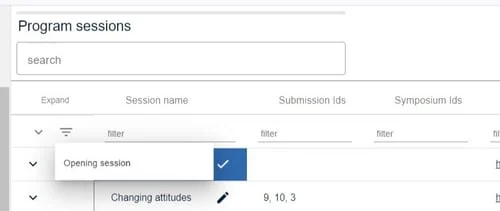
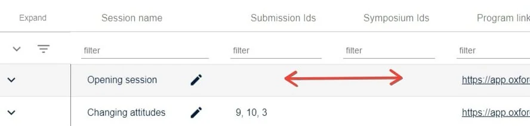
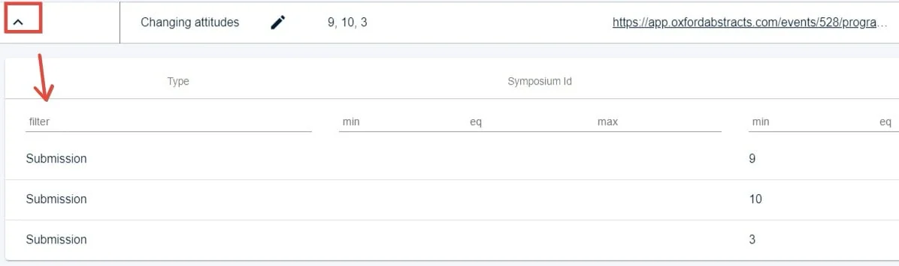
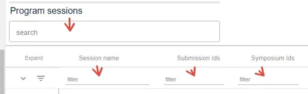

Program sessions table
For event organisersNot an organiser?
The program sessions table is a very useful tool for an overview of program session information, and to manipulate and extract data. You can add and remove columns, delete or edit submissions and download reports.#
Go toEvent dashboard → Conference → Program → Sessions
NB: To become familiar with the tables in the Oxford Abstracts system, you should read An overview of the tables function.
The main table contains all the data related to the session. The Accordion tables contain the submissions (and symposia, if you have this bolt-on) that are scheduled in each session.

There are some editable fields in the table (denoted by a pencil icon), eg Session name. Click in the field to update. Changes will be reflected in the program.

Clicking anywhere in the row will take you to the session in the program

Clicking on the arrow in far left column will reveal the submissions that are attached to the sessions.

You can search and filter, as with all the other tables in the Oxford Abstract system.
Did this page solve it?
Thanks — this helps us fix it.
Didn't solve it? Ask our support team
No question is too small, and there's no charge for asking. Raise a ticket and someone who knows the software will pick it up.